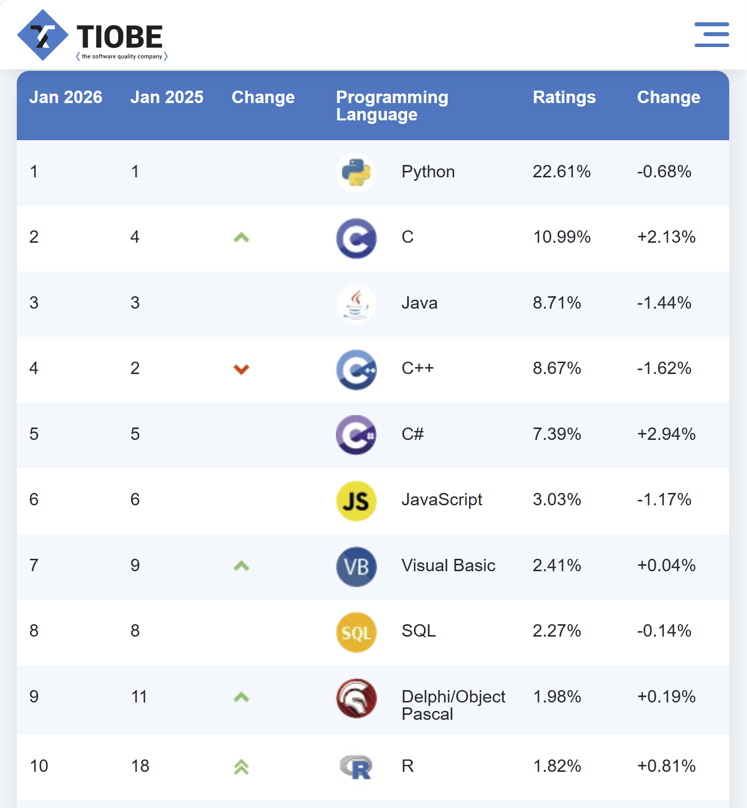
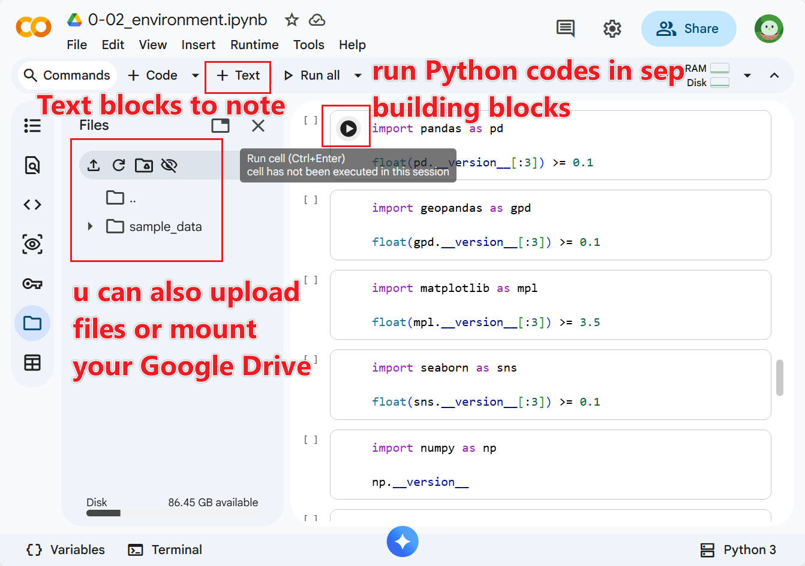
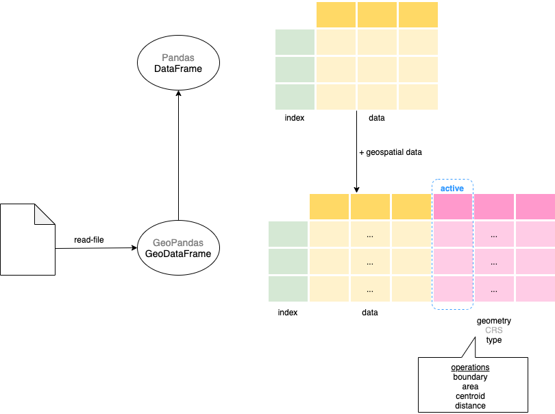

class: center <br> # Spatial Analysis of Urban Data ## Lecture and Tutorial: Introduction to Python in Urban Data Analytics [Bayi Li](mailto:barryli081@gmail.com) .toc-wrapper[ <div class="toc"> <a href="#week3-focus" class="toc-item">Week 3 Focus</a> <a href="#why-python" class="toc-item">Why Python</a> <a href="#core-concepts" class="toc-item">Core Concepts</a> <a href="#workflow" class="toc-item">Tutorial Workflow</a> </div> ] --- name: week3-focus ## Week 3 Focus This lecture introduces Python as a practical tool for urban data analysis and prepares students to use Python together with QGIS in later weeks. - understand why Python is useful in urban GIS workflows - learn the basic concepts needed to read and write simple code - recognise the role of notebooks, libraries, and tabular data structures - connect Python skills to later tasks in data cleaning, analysis, and mapping --- ## Learning Objectives By the end of this session, students should be able to: 1. explain why Python is widely used in urban data analytics 2. distinguish between GUI-based GIS work and code-based workflows 3. identify core Python concepts such as variables, functions, loops, and libraries 4. describe the role of Pandas and GeoPandas in urban spatial analysis 5. follow a basic Colab-based workflow for running introductory Python notebooks --- ## Lecture Outline 1. Why Python matters in urban data analytics 2. Python versus GUI-based GIS tools 3. Jupyter Notebook and Google Colab workflow 4. Core Python concepts for beginners 5. Key libraries for urban data analysis 6. Tutorial pathway into DataFrame and GeoDataFrame work --- name: why-python ## Why Python? Python is widely used because it combines readability, flexibility, and a large ecosystem of reusable tools. It is especially useful in urban data analytics because it supports: - reproducible workflows - repeated data cleaning and transformation - scalable analysis across many files or places - integration with spatial and statistical libraries --- ## Why Python Is Beginner-Friendly .left_half[ Python: ```python def square(x): return x * x ``` ] .right_half[ R: ```r square <- function(x) { x * x } ``` ] .clear[ ] Python's syntax is often easier for beginners because it is relatively compact and close to plain language. --- .right_half[ <figure> <p></p> </figure> ] ## Why Python Matters for Urban Research Python is supported by a large community and can be used across many domains. For urban researchers, that means: - many tutorials and examples already exist - data science and GIS libraries work in the same environment - workflows can move from tabular data to maps and models without switching languages --- ## GIS Tools vs Python Python-based analysis and GUI-based GIS software solve many of the same problems, but they do so differently. | Aspect | QGIS | Python | |---|---|---| | Learning curve | easier to start | steeper at first | | Transparency | lower | high | | Automation | limited by default | strong | | Scalability | good for one-off tasks | better for repeated workflows | | Reproducibility | harder to document fully | explicit in code | --- .left_half[ Python turns click-based tasks into **reproducible and automated workflows**. ] .right_half[ Python also gives you **more direct control** over logic, data structures, and analysis steps. ] .clear[ ] For example, creating a 500 metre buffer from the Upper Changi MRT: .left_half[ <figure> <img src="imgs/jupyter/buffer-qgis.jpg" class="zoomable" width="100%"> </figure> ] .right_half[ ```python buffer_500m = upper_changi_pt.buffer(500) ``` ] --- ## Use Python Together With QGIS For this course, Python is not a replacement for QGIS. Instead, students should see the two as complementary: - QGIS is often faster for visual exploration and map inspection - Python is stronger for automation, transformation, and reproducibility - together, they support a more complete urban analytics workflow --- ## Jupyter Notebook and Google Colab .right_half[ <figure> <p></p> </figure> ] Google Colab is a cloud-based Jupyter Notebook environment that lets students run Python in a web browser without local installation. You only need: 1. a Google account 2. a web browser 3. internet access --- ## Why Colab Is Used in This Course Colab is useful for teaching because it lowers setup friction. Benefits: - no local Python installation required - notebooks combine code, text, and output in one place - easy sharing through links Limitations: - sessions time out - temporary runtime storage resets - resources are shared and limited --- ## Organising Files and Projects A clear file structure is important in coding projects. ```bash project/ ├── README.md ├── data/ │ ├── raw_data/ │ ├── intermedia_data/ │ └── processed_data/ ├── scripts/ │ ├── data_processing.py │ └── analysis.ipynb └── results/ ├── figures/ └── summary_report.pdf ``` Good organisation reduces confusion and makes later work easier to reproduce. --- ## Naming and File Path Guidelines .right_half[ <figure> <img src="imgs/non-ascii_characters.jpg" width="100%"> <figcaption>Non-standard characters and inconsistent naming often cause avoidable problems.</figcaption> </figure> ] Recommended practice: - avoid spaces in file names - avoid non-ASCII characters in paths - use underscores for readability - keep folder names stable across the workflow These habits reduce file-path errors and make scripts easier to share. --- name: core-concepts ## Core Python Concepts To start using Python for urban data analytics, students need only a few basics first: - data types - data structures - functions - loops and conditionals - libraries These are the building blocks for later analytical workflows. --- ## Data Types and Structures Common Python data types include: 1. numbers: integers and floats 2. text: strings Two important data structures are: 1. lists ```python ['ASD', 'EPD', 'LKYCIC'] ``` 2. dictionaries ```python {'LKYCIC': 'SUTD', 'HASS': 'SUTD', 'ISEAS': 'NUS'} ``` --- ## Functions A function is a named block of reusable code. ```python def myfunction(input): output = input * 5 - 10 return output ``` ```python myfunction(input=10) ``` Functions help make analysis reusable, readable, and easier to debug. --- ## Looping and Conditionals Loops repeat actions. Conditionals control whether code runs. ```python for variable in sequence: # Code to execute ``` ```python if condition: code_runs_if_true elif another_condition: code_runs_if_true else: code_runs_if_all_conditions_false ``` These become useful as soon as students work with multiple records, files, or rules. --- ## Libraries A library is a collection of reusable tools for common tasks. .left_half[ ### Import a library ```python import time ``` ```python import pandas as pd ``` ] .right_half[ ### Import specific tools ```python from matplotlib import pyplot as plt from shapely.geometry import Point ``` ] .clear[ ] Libraries are what make Python so powerful for urban analytics. --- ## Key Libraries for Urban Data Analytics ### NumPy **NumPy** supports numerical computing and fast array operations. .right_half[ <figure> <img src="imgs/numpy/numpy_simple_example.jpg" width="100%"> </figure> ] ```python import numpy as np population_grid = np.array([ [1200, 1500, 1300], [1100, 1700, 1250], [1000, 1400, 1200] ]) ``` It is useful when urban data is structured as grids, matrices, or other numerical arrays. --- ### Pandas **Pandas** is used for tabular data manipulation and analysis. ```python import pandas as pd data = { 'Pillar': ['ASD', 'HASS', 'LKYCIC'], 'Staff Pop': [100, 80, 50], 'Student Pop': [200, 50, 70] } df = pd.DataFrame(data) print(df.head()) ``` For many urban datasets, the DataFrame is the main starting point. --- ### GeoPandas and Other Spatial Libraries Representative urban and spatial libraries include: - **GeoPandas** for vector spatial data in tabular form - **Shapely** for geometry operations - **PyProj** for coordinate transformations - **Geopy** for geocoding and spatial lookup - **Folium** for interactive web maps - **NetworkX** for network analysis - **PySAL** for spatial analysis - **Rasterio** for raster data Students do not need to master all of them now. The goal is to understand what kinds of tasks Python can support. --- ## DataFrame and GeoDataFrame A **DataFrame** is a two-dimensional table with rows and columns. A **GeoDataFrame** looks similar, but it also contains geometry. .left_half[ <figure> <img src="imgs/pandas/example_pandas.jpg" width="100%"> <figcaption>Pandas DataFrame example.</figcaption> </figure> ] .right_half[ <figure> <p></p> <figcaption>GeoPandas adds a geometry column for spatial work.</figcaption> </figure> ] --- name: workflow ## Tutorial Workflow A practical week 3 workflow is: 1. open the notebook in Google Colab 2. run simple Python cells and inspect outputs 3. practice basic data structures and functions 4. import a tabular dataset into a Pandas DataFrame 5. understand how a GeoDataFrame extends a DataFrame for spatial work 6. prepare for later weeks in cleaning, mapping, and spatial analysis --- ## Suggested Notebooks Use these materials as the guided tutorial pathway: - [environment.ipynb](https://github.com/BayiLi081/GIS-training/blob/py-bootcamp/environment.ipynb) - [1-01_data.ipynb](https://github.com/BayiLi081/GIS-training/blob/py-bootcamp/jupyters/1-01_data.ipynb) - [1-02_operation_function.ipynb](https://github.com/BayiLi081/GIS-training/blob/py-bootcamp/jupyters/1-02_operation_function.ipynb) - [1-03_looping_conditionals.ipynb](https://github.com/BayiLi081/GIS-training/blob/py-bootcamp/jupyters/1-03_looping_conditionals.ipynb) - [1-04_dataframe_geodataframe.ipynb](https://github.com/BayiLi081/GIS-training/blob/py-bootcamp/jupyters/1-04_dataframe_geodataframe.ipynb) --- ## Reading Material - Python official tutorial: https://docs.python.org/3/tutorial/ - Pandas documentation: https://pandas.pydata.org/ - GeoPandas documentation: https://geopandas.org/ - Google Colab documentation: https://colab.research.google.com/ - QGIS and PyQGIS documentation: https://qgis.org/pyqgis/master/ --- ## Key Takeaways - Python is an important tool for reproducible urban data workflows. - It complements rather than replaces GUI-based GIS software. - Students only need a few core concepts to begin using Python productively. - Pandas and GeoPandas are especially important bridges between data analysis and spatial analysis. - Google Colab is a practical entry point for learning Python in this course. --- <xL>Continue with Bootcamp Materials: </xL><button onclick="window.location.href='py-bootcamp.html'">Open Extended Python Bootcamp</button> <xL>Continue with Lecture: </xL><button onclick="window.location.href='sdp.html'">Go to Spatial Data Processing and Cleaning</button> <xL>Back to course menu: </xL><button onclick="window.location.href='index.html'">Go Back to Menu</button>